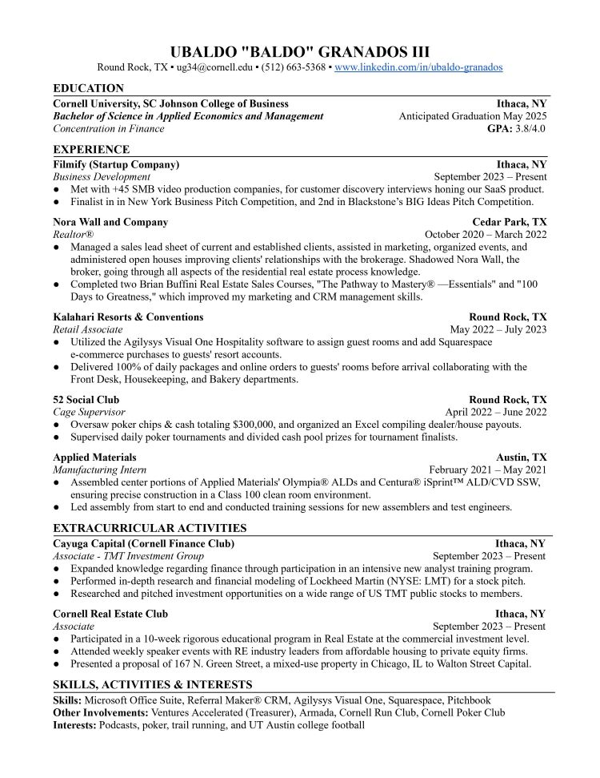

Resume
After graduating high school in 2020, I took the opportunity to explore my interests in business and sales by taking a gap year to become a REALTORS® in Austin, TX. This gap year I changed the trajectory of my educational journey, closing the door of my high school interest in engineering to follow a business-focused career path. After the gap year, I enrolled in Austin Community College while working part-time, where I excelled, obtaining a 4.0 GPA. After two years, I transferred to Cornell University to pursue a bachelor's degree at the Dyson School of Applied Economics and Management. While at Cornell, I am taking a rigorous course load, participating in school clubs, and working part-time on Filmify, a startup streamlining business tasks for video production owners. I am interning at AlphaSights this summer, building upon my sales, negotiation, and networking skills.
